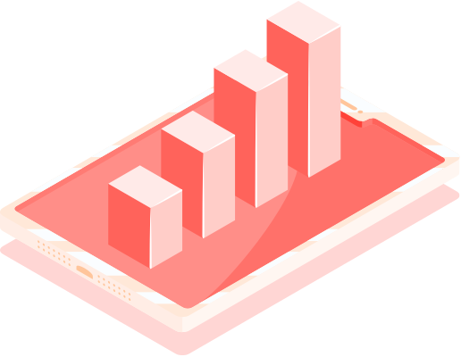

CLOVER OS PRODUCT

- Products for users:
Wallet + Browser - a Multi-chain wallet (can be easily swapped);
- b Applications explorer
- c Visual browsing of on-chain assets

- Clover Products for businesses:
Technology stack + community - a Polkadot’s availability for EVM
- b standardized development kit for dapps.